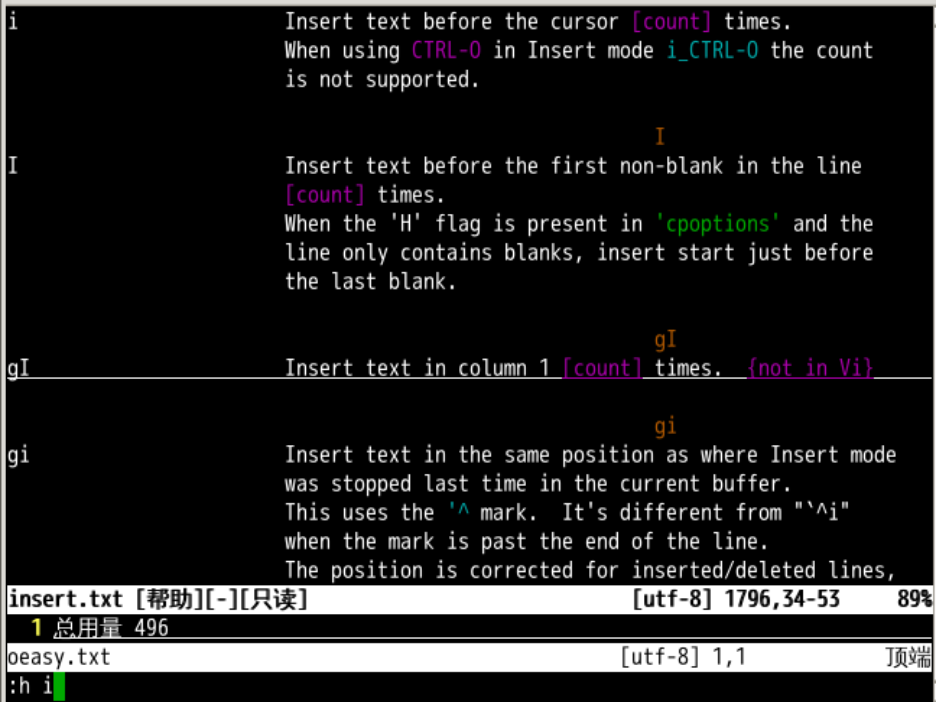
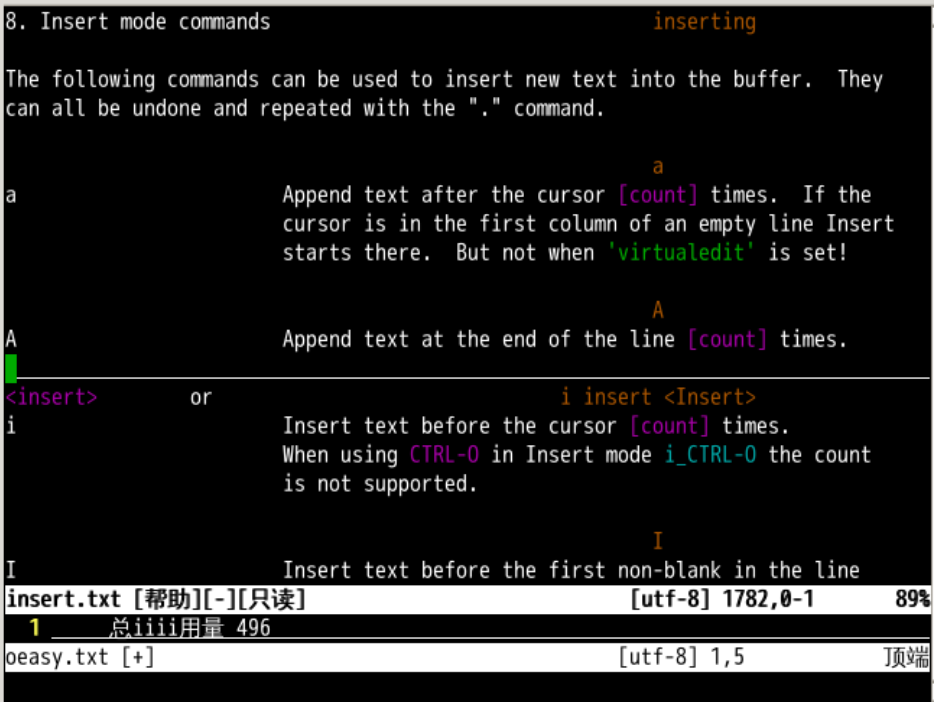
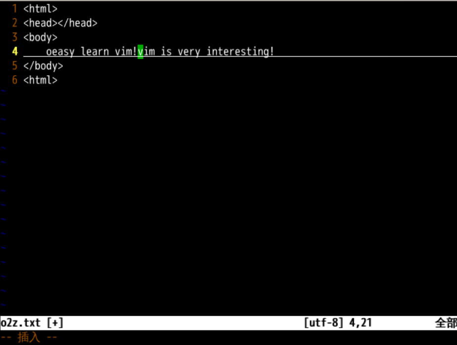
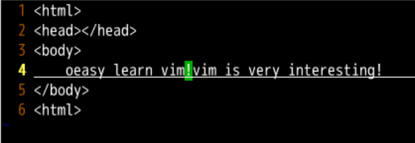
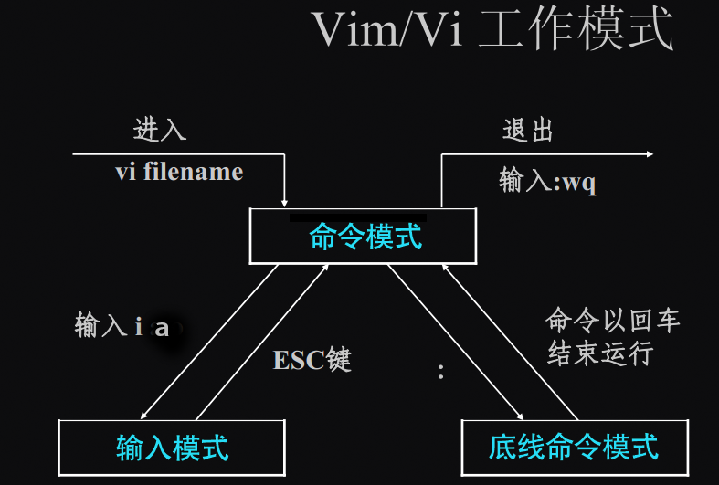

追加文本
回忆上节课内容🤔
- 我们这次深入了 i 命令
- i 在当前的光标之前插入
- I 在本行文本的最前面插入
- 还有一些常用的编辑命令
- . 重做
- u 撤销
- ctrl+r 还原
- 关于插入，还有什么讲究吗？🤔

类似的命令
- 还有没有和插入相关的的命令呢？？🤔
- 相类似的命令一定在手册的同一个地方！🤨
- 我们得还在插入命令的附近找找
插入命令
- 首先我们找到插入命令的帮助📕
:help insert- 简写为
:h i

我们向上翻可以找到 a 命令。
追加文本

i和a都是Insert mode commands- 插入位置
i是before cursor在光标前插a是after cursor在光标后插- 对应命令
i意思是inserta意思是append
切换模式
- 我们可以 a 进入插入模式
- esc 回到正常模式
- 然后反复切换 a、esc
- 观察左下角提示
- 左下角有
--插入--就是插入模式 - 左下角啥都没有就是正常模式
- 这就和 i、I 很像
重复、撤销、重做
- 我们可以 i 进入插入模式
- 输入
oeasy 空格 - ctrl+c 回到正常模式
- 按几次 . 重复一下插入操作
- u 可以撤销
- ctrl+r 可以重做
练习
- 如果我有个网页源文件如下图
- 光标在当前绿色的位置
- 如果我想在上个感叹句之后插文字，应该用什么命令呢？

- 应该用
i - 在当前的光标之前插入
- 如果我想在整行文本之前插入呢？应该用什么？
- 用
I - 在光标所在行文本的最前面插入
:h I
继续练习
- 但如果我的光标在下图的位置呢？
- 我想在叹号后面插入内容

- 这个时候应该用
a after cursor在光标之后所在的叹号之后插入文字- 如果我想在本行最后插入呢？
- 用
A在本行 最后 插入 :h A- 就像用
I在本行最前面插入一样
追加写入
- 如果我们保存了当前文件
oeasy.log - 然后退出了 vi
- 然后重新进入 vi
- 在一个未命名文件中写一些东西，比如
oeasyo2zo3z:w >> oeasy.log- 这就是用追加的方式去写这个log文件
- log中的东西还都有
- 最新的追加在最后
- 与
:w oeasy.log对比 :w oeasy是覆盖写入>>意味着追加写入- 试试追加
- 我们可以新建一个
- 然后追加一些东西写入
oeasy.txt - 然后我们看看这个
oeasy.txt - 是不是写进去了
总结
- 除了
i、I在前面插入文本之外 - 我们了解到
a、A可以在行末插入文本 a也可以从正常模式切换到插入模式

a插在光标之后A插在本行最后- 关于插入，还玩点儿什么吗？🤔
- 我们下次再说！👋